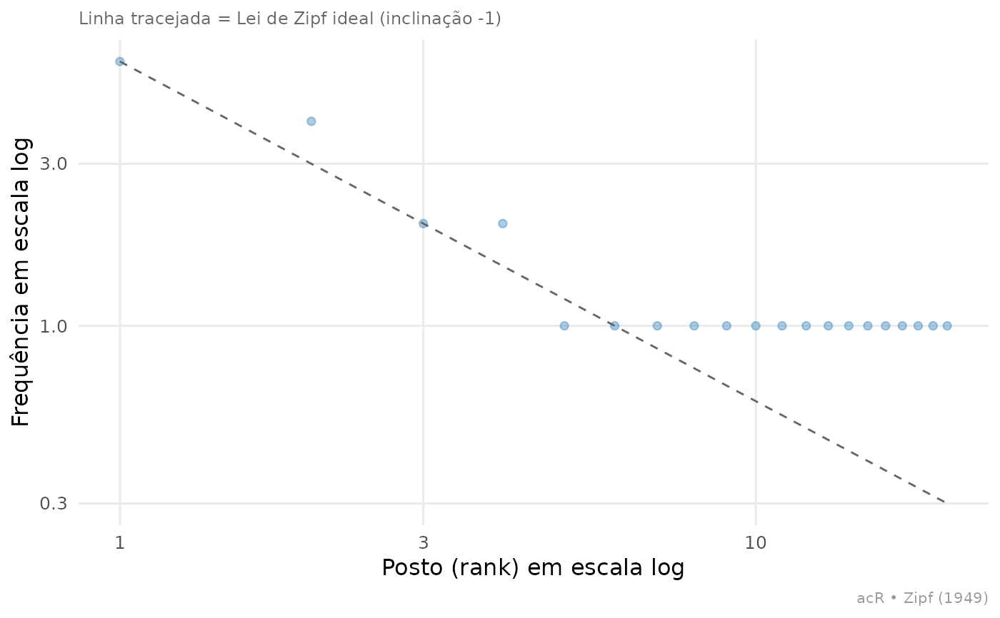

ac_plot_zipf() produz o gráfico diagnóstico clássico de Zipf (1949):
frequência de cada palavra contra sua posição no ranking de
frequência (1º, 2º, 3º... termo mais comum), em escala log-log. Em
praticamente qualquer corpus de linguagem natural: avaliações de
produto, letras de música, posts de redes sociais, discursos: essa
relação é aproximadamente linear com inclinação próxima de -1: a
palavra mais frequente aparece cerca de duas vezes mais que a
segunda, três vezes mais que a terceira, e assim por diante.
É útil como diagnóstico de qualidade do corpus antes de qualquer análise mais sofisticada: desvios fortes da reta esperada podem indicar problemas de tokenização (pontuação não removida dominando o ranking), um corpus pequeno demais, ou texto fortemente repetitivo (boilerplate, templates).
Arguments
- freq_tbl
Tibble com colunas
tokenen, tipicamente a saída deac_count(). Se vier com uma coluna de grupo (deac_count(corp, by = ...)), usebypara facetar.- by
Nome da coluna de grupo em
freq_tblpara facetar o gráfico (um painel por grupo). Padrão:NULL(corpus inteiro).- title
Título do gráfico. Padrão:
NULL.
Examples
# Avaliações de produtos de duas categorias
df <- data.frame(
id = paste0("r", 1:6),
texto = c(
"bom produto bom preco bom atendimento",
"produto bom mas entrega lenta",
"preco justo produto funcional",
"péssimo atendimento produto com defeito",
"excelente produto rápido e eficiente",
"produto ok nada de especial"
),
categoria = rep(c("eletronico", "casa"), 3),
stringsAsFactors = FALSE
)
corpus <- ac_corpus(df, text = texto, docid = id)
freq <- ac_count(corpus, drop_punct = TRUE, by = NULL)
ac_plot_zipf(freq)
